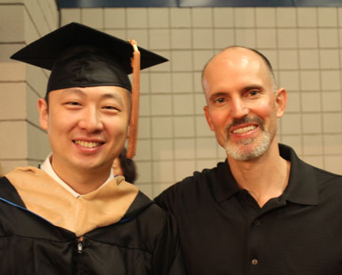
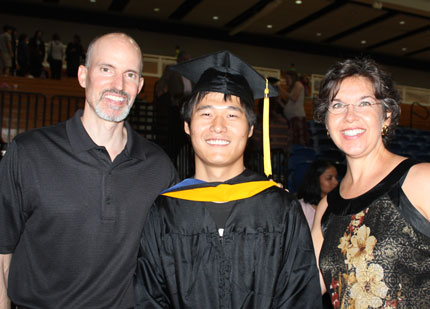
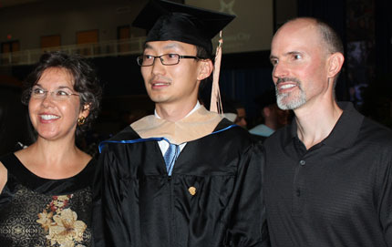
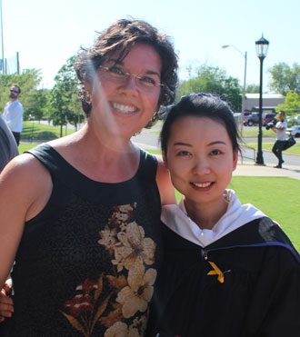
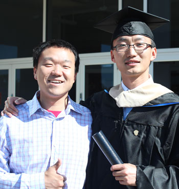
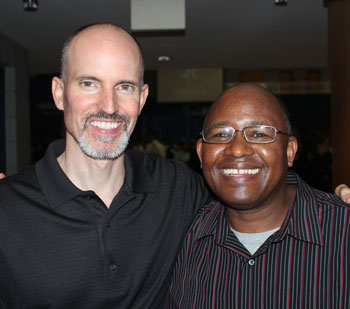

May 10, 2014
| We were very pleased to attend the graduation
of several of our good friends from Oklahoma City University. They
all achieved Master's degrees in various majors. We are proud of
them for all their hard work, and can't wait to see what blessings God has
in store for the next phase of their lives! |
|
 |
 |
| Simba (Zheng JingLei) with Eric - Simba earned his MBA | With Ray (Song Rui) - Ray earned his Masters in Computer Science |
 |
 |
| With Michael (Gu XinXing) - Michael earned his Masters in Accounting | Me with Jade (Wang Lin) - Jade earned her Masters in TESOL |
 |
 |
| Isaac (Guo YunLong) with Michael - good friends, to us and one another. | Speaking of good friends, here's Eric and Sam Kirui |
| Congratulations Graduates! | |